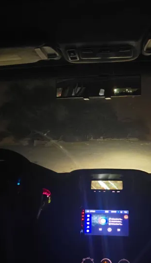
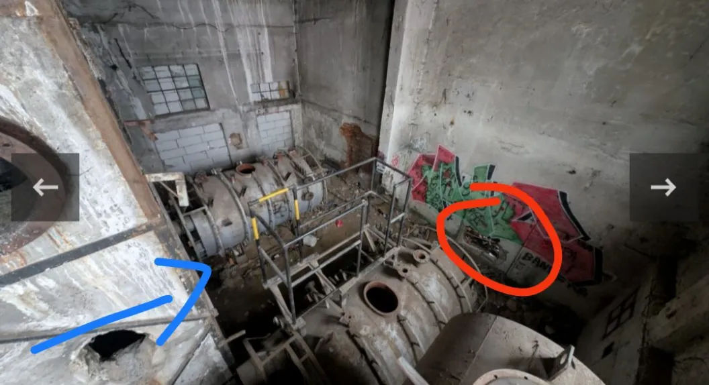

Stories Feed
This is where shared stories,thoughts appear. New tales, stories, guides, thoughts and informations will be added by the caretakers of this place. Return often to read what others have whispered into the void.
Something Unidentifiable
This had happened on friday midnight, around 12am in the night a couple of my friends had knocked on my door (i live alone and i dont sleep past 5am and they know that so they usually come over to hang out) so they knocked on my door and they came in, its me and 4 of my friends and we were chilling but it got kind of boring so one of my friend suggested to go on a drive and we all agreed. (We live in a small island in the heart of the gulf called "Bahrain" its in the middle east) so its 12:30 midnight and we are driving around and we decide to go off road. There is this place called sahkir where the countries gas factories and Oil Rigs and stations are there as well as a few military bases, during the winter alot of people come around that place for camping (usually ppl set up these large tent houses which are almost the size of a plot of land and hang out and barbecue and each tent is big enough to hold 10-30 people and there are many plots and tents that people give out for rent) we had visited the Gas Factory and seen it from outside (pictures embedded) then we had gone to the tree of life, (keep in mind this island is mostly a desert and sahkir is one of the biggest deserts in this island) its a tree that is in the middle of the desert for over 100+ years and no one seems to know why (we dont even have underground water) so we had visited it. You can only go a certain distance with ur car rest is on foot so we parked the car and we were about to go out and my friend saw something move by the tree so none of us left the car, we had put the car in high beam lights (its a mitsubishi pajero 2009) and we see a few figures but none of us were convinced its actually something until one of them started having glowing eyes and kept disappearing and reappearing (it cannot be a dog or any wild animal because the place where we were at, the most life u see is spiders, desert snakes, sand lizards. NOTHING big enough as a human) my friend took pics(embeded)

U cannot convince me thats an animal Shadow figures too and we all started freaking out and as soon as my friend reverses rhe suv, his carplay display screen freezes (its still frozen) the radio , music , BT wasn't working at all and the timr was stuck at 12:30 (its almost 1am at the time of the pic) We start praying and driving We keep hearing dogs bark Its middle of the desert Dogs dont come here Bahrain doesn't have stray dogs Its extremely rare We can hear barks but we search and see no dogs We all stopped the car on the middle of the sand path and kept quiet All the sounds had stopped Until my friend said "Bro drive i just heard my mom" His mom had passed away from alot of years ago We thought he was trolling us Until he genuinely started crying We all reach home later We are a group of friends who are really into supernatural, we like exploring abandoned places and places where people experience "paranormal" we've been going around places from the past 1yr in our country and neighbouring country (saudi) but this is the first time we had actually physically all together witnessed an actual figure. Most of the time its just strange noises from our past experiences.
- cxt06a on discord
The Man in the Winery

I’d heard tales about a scary homeless guy with a telescopic baton who supposedly roamed the building. My friend and I didn’t believe it, so we decided to check it out. I went in first, with my friend right behind me. I was trying to crawl through an opening in the brick wall, and there was some kind of round generator or machinery nearby (Check photo). Then I stepped on a shard of glass that broke under my foot. At that exact moment, I heard someone screaming, boots moving toward me, thumping against glass, bricks, and plastic. We bolted out immediately. I never saw the guy clearly, and I couldn’t confirm if it was really him. A few days ago, I went back with another friend and saw a homeless man in the building. He was harmless and said he had been around the area often, especially in the winter. We explored the whole winery without incident. But sometimes I wonder… was the man I heard that night even real? The noises, the footsteps, the scream — none of it matched anyone I saw later. It felt like the place itself had conjured something, a warning, or maybe someone who didn’t exist at all. The red circle is the enterance we got trough, and the blue arrow is the place where the sounds came from Behind that metal thing there is anothe hole in the wall.
- anonymous
Trapped in Darkness
I was lying down with my eyes closed, just resting, when I noticed I couldn’t move. I felt like I couldn’t breathe, but I could still feel my body. While this was happening, the noises around me — birds, cars, everything — got louder and more distorted. I thought my head was going to explode. I felt stings on my body, like claws. My feet were touching a cold wall, and I managed to get control back by focusing on the feeling of my feet. Once I was back in control, all the distorted sounds stopped, and I could hear everything normally again. Even so, with my eyes closed, it felt like I was in a dark place, even though it was daytime.
- anonymous
Ghost Haunting my Partner Through His Mirror
As the title states, a ghost is haunting my partner through his mirror and attempting to manipulate him into giving his body to them. This all started yesterday, when he mentioned that when he looked into a specific mirror he felt like he was becoming trapped in it. I mentioned him that wasn’t good and that a ghost might be in there, then he proceeded arrogantly go and invite that ghost out side the mirror. Luckily, due to who the deity he’s in contact with, that ghost was swiftly put back. But now, this ghost has been noticed, and have been actively fucking with him. He’s never dealt with negative spirits before, and you could call him a bit of a newbie toward basic witch craft measures because he’s been depending on his deity basic protection against everything bad. Some other things, he can’t get rid of the mirror nor can he hide the mirror without drawing his parents attention as they are unaware of what he does. Furthermore, this ghost is angry and views the home as theirs.
- anonymous
The Gods Don't Care About Your Aesthetique
Broom Closet Friendly Ways To Perform Worship and Devotion: Cleaning can be done with mindfulness and sincerity. It may seem small, but cleansing does not need to include smoke and incense. It is how you carry your energy through a space as you clean and to whom you dedicate your efforts that matters more than what you have. Offering your food to the Divine when you eat, even if you cannot leave anything out or if food is scarce, can also be meaningful. You can consume your food and drink with mindfulness and dedication. Journaling and writing is helpful too; keeping a private journal, a folder on your phone or laptop, or even a digital shrine through a private Discord server can serve as devotion. A folder of saved photos or a Pinterest board dedicated to the Divine is another way. Writing poetry, prose, or songs for your Divine Beings is also a wonderful connection, even small notes such as “I saw a butterfly today and it reminded me of you.” Portable altars made from mint tins or small containers can hold tealights, stones, or pictures, dedicated to the Divine in question. Cheap perfume can be used as a special way of anointing yourself. Washing your hands and face before prayer, showering with mindful intention, or bathing can all be acts of cleansing and purification, since the body is a bridge between you and the Divine. Drinking cups or reusable bottles can be dedicated vessels, while wearing certain colors, tying knots in thread during prayer, or braiding and tending your hair can also be devotional. You do not need to hide your faith; the sacred is already woven through the ordinary, and you only need to meet it there. There will always be other practices across groups and cultures, but these are some simple and gentle ways to begin without being overwhelmed.
- anonymous
I see things that should'nt exist
The first story is something I don’t fully remember, because I was only about 4 or 5 years old. I was living in Poland, and I clearly recall seeing a dark, tall figure once. It was about 180–190 cm tall, wearing jeans and a leather jacket. It had no face, but you could make out a round, shaved-looking head.
From what my parents told me, at that time we were sleeping in what is now the common room of our house on the second floor. One night, I suddenly said: “Look, Mom! Someone is looking through the window!” My brother said the same thing, but my mom claimed she didn’t see anything.
According to her, both me and my brother described seeing that figure countless times. We were so scared that we stopped sleeping in the common room and stayed in our parents’ bedroom instead. Later, my mom and dad visited a woman in Gdynia, who told them that someone might have placed a curse on me and my brother. She gave them instructions to remove it (I never found out what exactly they did), but after they followed her advice, the figure stopped appearing. Personally, I only distinctly remember seeing it once.
The second story happened about 3 or 4 years ago, just a day or two after my grandma passed away. She lived next door, and from my house I could see the window to her room. One evening, around 8 or 9 pm, I glanced toward her window and saw a figure that looked eerily similar to my grandma. It vanished behind a wall, and that was the last time I ever saw it.
My relatives who lived in the same house said they sometimes heard footsteps at night coming from her room. Once, my cousin had to sleep in her bed, and she said the mattress felt warm — as if someone had been lying next to her.
On the day my grandma died, my brother also experienced sleep paralysis. He described it like this: he was lying in bed when he saw her standing in the corner of our room, smiling in an uncanny, unsettling way. Slowly, she began creeping toward his bed. He tried to move, but couldn’t. When she reached the foot of his bed, her head began spinning around 360 degrees, spinning faster and faster as she came closer, while still keeping the same terrifying grin.
When she finally reached his chest, she climbed on top of him and stood there for about 10–15 seconds. During that time, he couldn’t breathe. Then suddenly, he woke up. What’s chilling is that he woke up just moments before my mom got the call that my grandma had passed away — around midnight.
So yeah… those are my horror stories.
- niko_riko_2115 on discord
Fire that got caused by NOTHING
Ok so I wake up in the middle of the night to a intense heat in my room, I look at my clock and it’s 3 in the morning, I open my cortens to look outside to see raging fire spreading all over my house. I try to open my door but the handles to hot, I scream and my dad comes and kicks the door down to get me out, we crawl out the house in panic. As soon as we got outside a spark flys to me but slightly misses. We all get into our car right next to the house trying to get away. The car won’t start, my dad tries again and we drive out of the drive way to watch from a far helplessly. It was apparently “to cold” to use the fire hydrant for water so we had to sit there for hours watching our house cooked. We lost 6 cats that day, my dog and 3 other cats survived.
- anonymous
Chapel Story
Once in a forgotten chapel, I saw symbols etched into stone glowing faintly at night. No priest ever spoke of them, but the villagers never went near the place after dark.
- anonymous